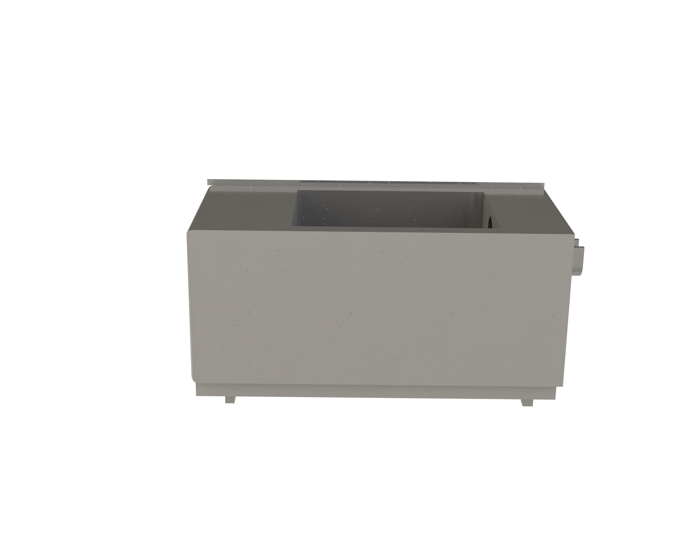

Plastic Recycling Process
1) Rag pickers
Rag pickers in Dharavi collect plastics from households of Mumbai residents and from places such as shops, industries, train stations and open spaces. There is a category in rag pickers who buy or exchange plastic materials with vegetables or rice with residents. However, rag pickers mainly collect and sell their plastics to scrap shop and collectors. They collect around 100 kg of plastics on average per day. That gives a minimum of 2500 kg per month. Rag pickers bring the collected plastic to Dharavi and sell it to collectors. The rag pickers in Dharavi collect the plastic in Dharavi. While there are rag pickers around Mumbai who take the plastic either to Dharavi or outside Dharavi where plastic can be recycled. Dharavi recycles 80% of the plastic. So the other 20% is recycled in different places such as Band up.2) Collecting
Collectors in Dharavi get plastics both from households and rag pickers. There was no specific rag picker for each collector because the rag pickers sell their plastic to the collector that has a good rate for the plastic type. But some collectors have 2-3 rag pickers on average. On average, the mber of bags of recycled plastic they get from rag pickers is 700-1,000 kg/day. PP (Polypropylene) is the most common plastic type collectors get from rag pickers. The most expensive is the PC (polymer carbonate), which is bulletproof, and it is used in the headlight of cars. There are approximately 1000 collector shops in Dharavi. They usually have employees who sort collected plastics. On average collectors employ 2-3 sorters. These people work 12 hours per day from 9 am to 9 pm.3) Grinding
Once the plastic are collected and divided based on their grade, these are put into a grinding machine for shredding and reducing the size of the plastic. Usually flame retardant (FR) and non-FR plastic is separated before the grinding process because it is more profitatable to separate FR and non FR plastics. Dharavi, only few units were found to be practicing separation of FR and non-FR plastic because the clean non-FR has a higher market value. The The power consumed by the grinding machine cost around 15-20 rupees per kWatt/unit. In Dharavi, they use on average around 25-30 Units per day in a single shop. This means that shops in total pay around a maximum of 6,000 rupees a month to produce 200 to 300 kg in a day. Almost 9,000 kg at the end of the month. According to the grinding factory, the price of a grinding machine range from 55,000-75,000 depending whether or not buyer wants to customize it. Each Grinding machine has different horse power and the more HP the less time it takes for the machine to grind.Image 1. Grinding machine
Adding plastic to the grinding machine is a continuous process. For an average shop, they can produce approximately 700,000-1,000,000 kg. But it mostly depends on the horse power used, which is listed in the table above. The most common type of plastic that is grinded is the PP; buy all the type except Bisleri Water Bottle; sort plastic bags into large bags of 10-12 kg each. Also the Grinding machines can have different filters. The filter has different sizes of holes these holes can determine the size of the grinded plastic. The smallest is 2 mm and the largest is 2 cm. The size of the grinded plastic can adjust the shape by changing the plate in the bottom area.
| Horsepower | Kilogram's per hour |
|---|---|
| 10 Hp | 200 kg/h |
| 15 Hp | 300 kg/h |
| 20 Hp | 400 kg/h |
| 25 Hp | 500 kg/h |
| 30 Hp | 600 kg/h |
| 35 Hp | 700 kg/h |
4) Washing and drying
The FR and non FR, can be later separated through the processes of using a salt water bath for separating FR and non FR plastics. These units use the salt water flotation for carrying this separation. They prepare salt water solution and add the grinded plastic to it. The FR plastic (also known as low quality plastic) sinks down and settle at the bottom. While the other plastic floats upwards, which is then separated. The amount of salt added doesn’t follow a prescription or a certain percentage. There is a possibility of errors in the following process because of the large quantities washed. The process of washing the plastic can be done by the use of detergent in water, and can be done either by a machine or manually. When it is done manually, it is done washed in three separate tanks and moved from one tank to the other by a basket with holes for water to flow out.
This process is good but it can be done faster by the use of a washing machine that costs approximately around 50,000 rupees to produce 200 kg/day. However, when a machine is used it requires electricity that can charge around 17-18 rupees/unit per day. Using a washing machine can be better because it is capable of washing 50 kg at once but again, it depends on the size of the washing machine. When comparing the amount of water used, the electrical machine uses less water, which is around 40 liters at once. The water used for washing is changed depending when the area receives water supply some get it in the morning and others get it in the evening.The water tanks can be changed from 1 to 2 times per day depending on how dirty the water gets and when they get the water. Some change it in the morning because they get the water in the morning and some change it at night time. Before washing, sorting out the type of plastic is important because some plastic requires different temperatures of water during washing. For example virgin material (polycarbonate/PC) requires boiling water to wash; for that they have 70-80 kg vessels that they put on gas stove, which makes it more expensive comparing to other types of plastics.

In the drying process, it takes 2 to 3 hours to dry under the sun. While with an electrical machine takes around two minutes. However, the electric machine requires electricity. Therefore, shops with washing machines make money when it rains, because people who don’t have a dryer machines go to the people with a drying machine.
5) Pellet Production
The main purpose of plastic recycling in Dharavi is to minimize the waste by first collecting and separating scrap based on the properties and then recovering and reusing it. The recycling cycle in Dharavi includes shredding the mixture to reduce it to a finer particle size, then washing and drying it. After plastic gets recycled in Dharavi, it gets packaged and then shipped to other workshops around Mumbai to get further cut and then molded into products of predetermined shape. For the purposes of this report, we have only studied the process where the plastic material gets melt and then cut into the pellets, following the process of injection molding.Before undergoing the procedure of pellet production, shredded plastic mixture gets first colored to the color that is one shade darker than the original. Then, the pellet production process is run on a conveyer belt like model where it is first gets fed into the machine that melts the plastic shreds into the thread like form, then passes through the water filled tank to cool, and then finally passes through the roller containing unit that cuts these plastic threads into the final pellet form. The pellet production process starts with homogenized plastics being first warmed to an elevated temperature without making it to lose its free flowing characteristics.This temperature is most commonly at least 70C, but should not be above the the softening point of the majority of the plastic components. Typically, the temperature is between 70C to 100C. The main reason for such temperature range is the energy expense associated with constant procedure of warming water. The pellet production costs are further reduced by keeping water inside the cooling tank at room temperature and changing it only twice annually.